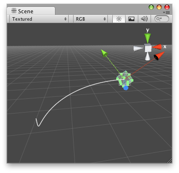

Handles.DrawBezier
Parameters
| startPosition | The start point of the bezier line. | |
| endPosition | The end point of the bezier line. | |
| startTangent | The start tangent of the bezier line. | |
| endTangent | The end tangent of the bezier line. | |
| color | The color to use for the bezier line. | |
| texture | The texture to use for drawing the bezier line. | |
| width | The width of the bezier line. |
Description 描述
Draw textured bezier line through start and end points with the given tangents.
To get an anti-aliased effect use a texture that is 1x2 pixels with one transparent white pixel and one opaque white pixel. The bezier curve will be swept using this texture.
Note: Use HandleUtility.GetHandleSize where you might want to have constant screen-sized handles.

Bezier Line in the Scene View.
using UnityEngine; using UnityEditor;
[CustomEditor(typeof(BezierExample))] public class DrawBezierExample : Editor { private void OnSceneViewGUI(SceneView sv) { BezierExample be = target as BezierExample;
be.startPoint = Handles.PositionHandle(be.startPoint, Quaternion.identity); be.endPoint = Handles.PositionHandle(be.endPoint, Quaternion.identity); be.startTangent = Handles.PositionHandle(be.startTangent, Quaternion.identity); be.endTangent = Handles.PositionHandle(be.endTangent, Quaternion.identity);
Handles.DrawBezier(be.startPoint, be.endPoint, be.startTangent, be.endTangent, Color.red, null, 2f); }
void OnEnable() { Debug.Log("OnEnable"); SceneView.onSceneGUIDelegate += OnSceneViewGUI; }
void OnDisable() { Debug.Log("OnDisable"); SceneView.onSceneGUIDelegate -= OnSceneViewGUI; } }
And the script attached to this Handle:
using UnityEngine;
public class BezierExample : MonoBehaviour { public Vector3 startPoint = new Vector3(-0.0f, 0.0f, 0.0f); public Vector3 endPoint = new Vector3(-2.0f, 2.0f, 0.0f); public Vector3 startTangent = Vector3.zero; public Vector3 endTangent = Vector3.zero; }